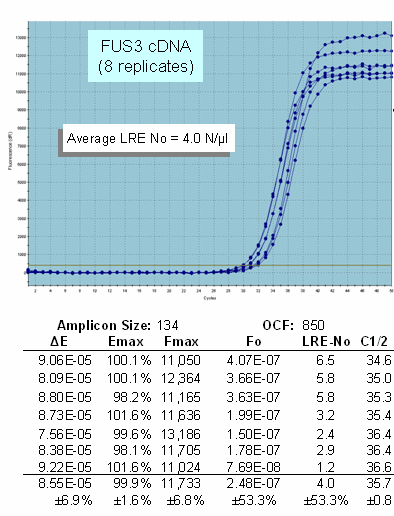
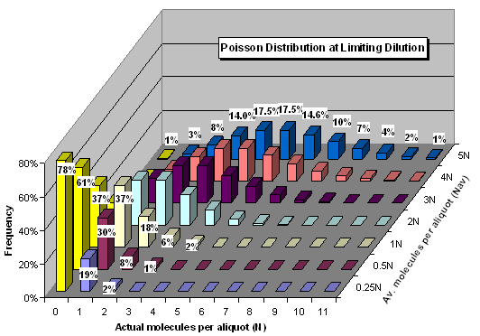
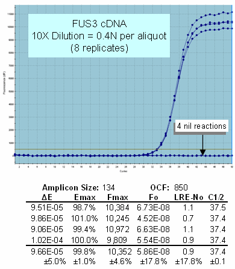
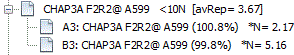

Note that the data presented here was taken from: Rutledge RG, Stewart D (2010) Assessing the performance capabilities of LRE-based assays for absolute quantitative real-time PCR. PLoS ONE 5: e9731.
Note also that the third LRE Overview video provided on the LRE qPCR website (sites.google.com/site/lreqpcr) presents a more detailed discussion of these datasets, along with how Poisson distribution can be used to conduct absolute quantification.
Scattering of replicate profiles
In contrast to most samples which produce closely clustered replicate profiles, samples containing <10 target molecules can produce
highly scattered replicate profiles. This is an example of a low
abundance transcript that produced replicate profiles scattered over a
two cycle region:
Production of highly scattered profiles at low target concentrations

LRE generated quantities (No) ranging from 1-6 molecules, with an average of 4.0 molecules per µl. Although this suggests that quantitative accuracy has been compromised, Poisson distribution provides an alternative explanation:

Poisson distribution dictates that at very low target quantities the frequency of aliquots (Y-axis) that will contain a specific number of target molecules (X-axis) can vary considerably, and that this variance is dependent on the target concentration (Z-axis). Poisson distribution further predicts that for target concentrations below 0.5 molecules per aliquot, the vast majority of aliquots will contain either one or zero target molecules.
The highly scattered replicate profiles shown above are thus consistent with that predicted by Poisson distribution. Furthermore, diluting the sample 10X to a predicted 0.4 N/µl, also produced replicate reactions that are consistent with that predicted by Poisson distribution. That is, aliquots contain either no target molecules (0 N) or a single target molecule (1 N):
Profile clustering is restored for single molecule amplifications

Note that although this is a very limited dataset, 1 N profiles can also be used for confirming the accuracy of optical calibration, which in this example suggests that the OCF may be about 10% too high, as the average over these four profiles is 0.9 molecules, 10% lower than the expected 1.0 molecule. That is, the OCF to target quantity relationship is linear, such that this potential 10% error in OCF would generate a 10% error in target quantity; also note that this error impacts all targets equally.
Nil reactions are diagnostic of a key landmark for absolute
quantification: zero
An important principle arising from absolute quantification
that is somewhat counter intuitive for conventional real-time qPCR
methods, is
that nil reactions are generated by zero molecule aliquots, rather than due, for example, by
a catastrophic enzymatic failure, or some other limitation of real-time
qPCR. In fact, the tight clustering of 1 N profiles is indicative of the extraordinary precision that can be achieved
with real-time qPCR.
Quantitative accuracy can be further assessed by "counting molecules"; that is, these profiles predict a total of four target molecules within eight aliquots, predicting an average concentration of 0.5 N per aliquot. This agrees closely to the LRE predicted quantity of 4.0 N per aliquot within the undiluted sample. This also illustrates another important principle of absolute quantification, which is that nil reactions (0 N) must be included into target quantity determination.
While a detailed overview is beyond the scope of this discussion, working with single molecule profiles also provides additional tools for assessing assay performance and quantitative accuracy, in part because it allows quantitative scale to be defined without the need to apply an external quantitative standard. An example is presented in the LDA Overview that describes the ability to conduct absolute quantification independent of the optical and kinetic parameters of real-time qPCR, which is also the foundation upon which digital PCR is based.
The <10 molecule problem
These examples illustrate two key phenomenon that impact
LRE quantification when working with target quantities below 10
molecules. The first is that extensive scattering of amplification profiles
precludes the ability to generate an
average profile.
The second is the necessity of averaging target quantities generated by
individual replicate profiles, including nil reactions, in order to accurately determine target quantity.
Thus, when a target quantity of <10 molecules is encountered, the LRE Analyzer will report target quantity as an average of the replicate profiles, as indicated within the average profile label:

See also:
Assessing of Quantitative Accuracy